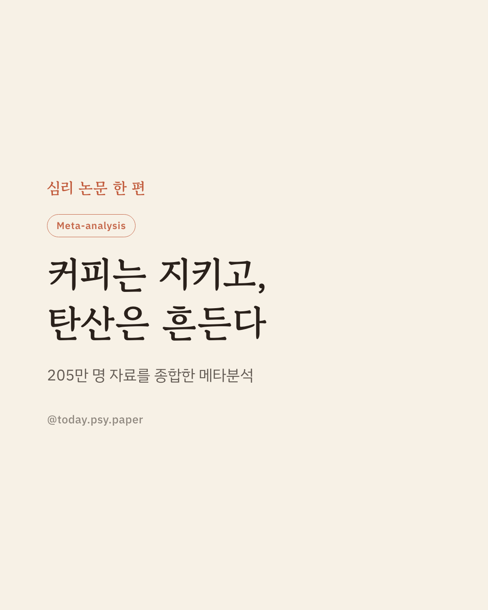
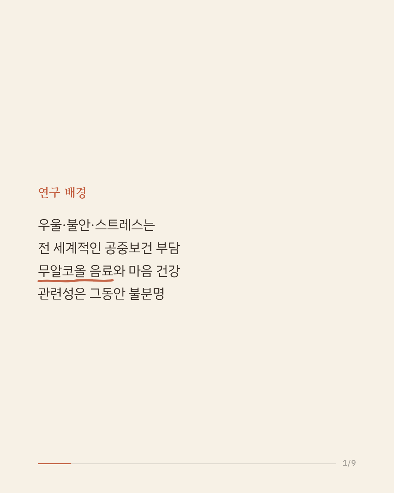
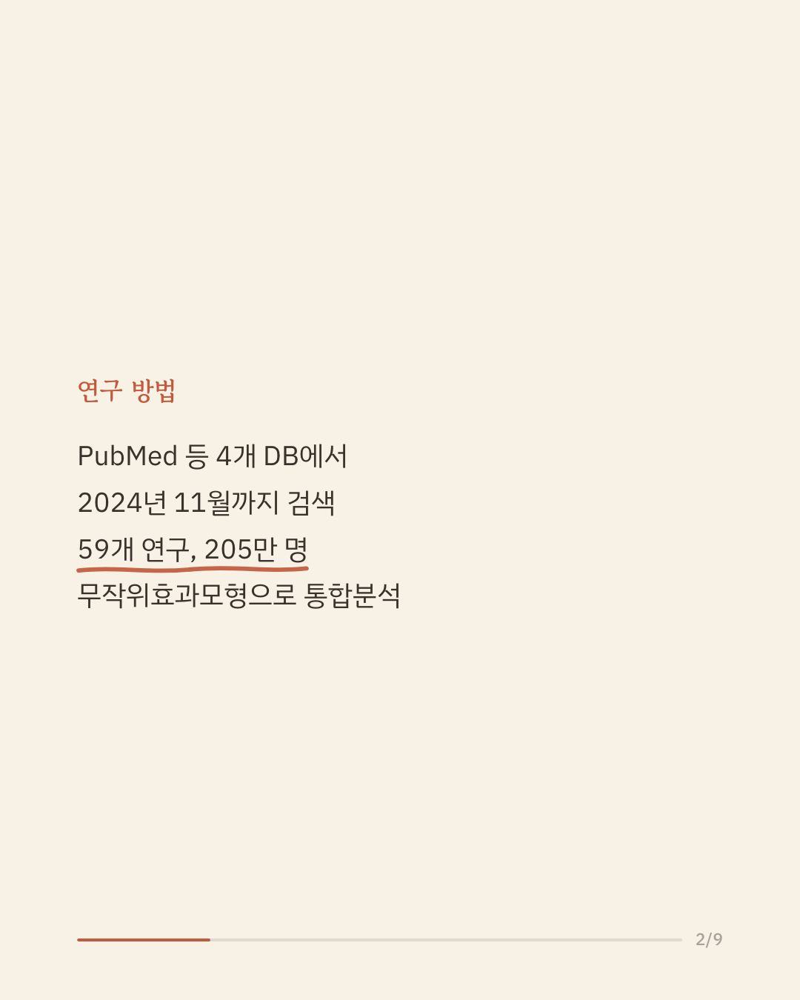
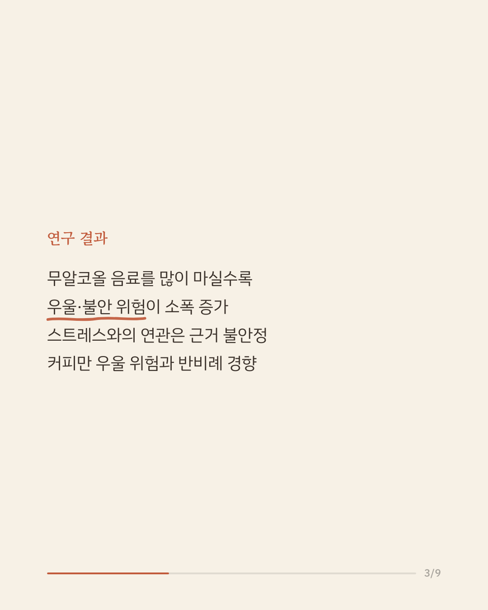
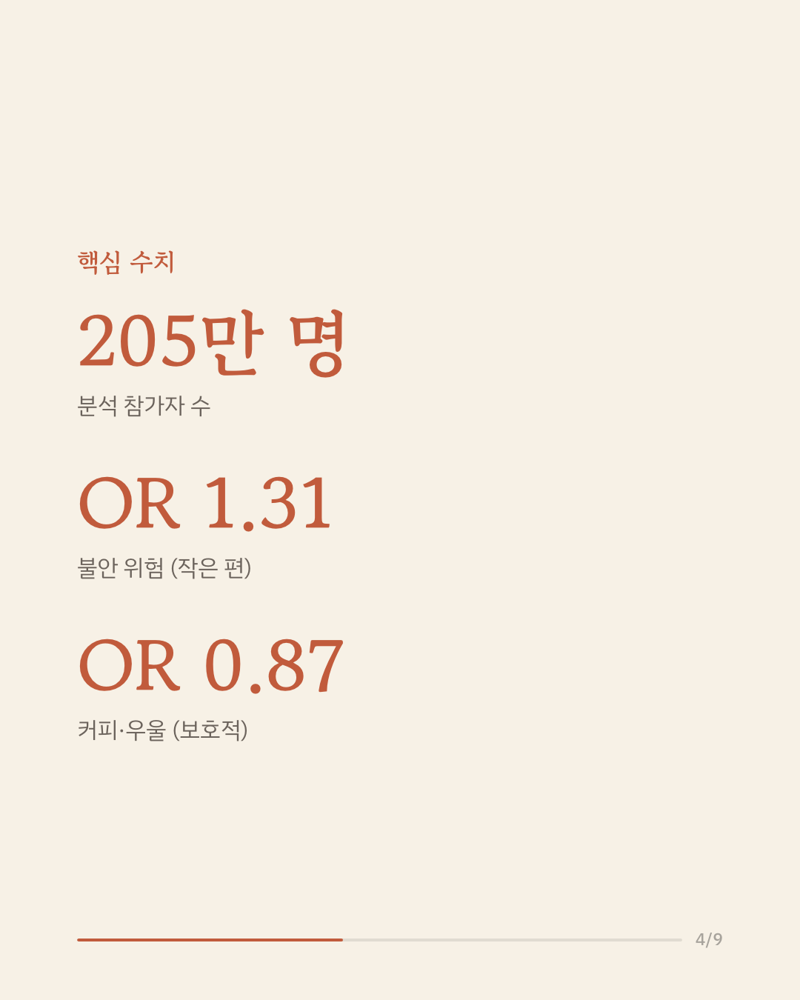
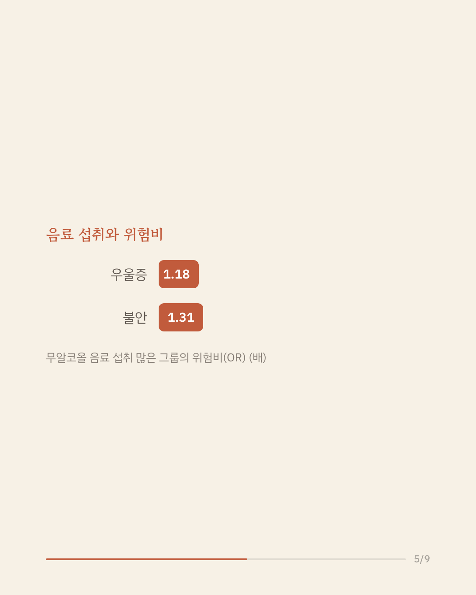
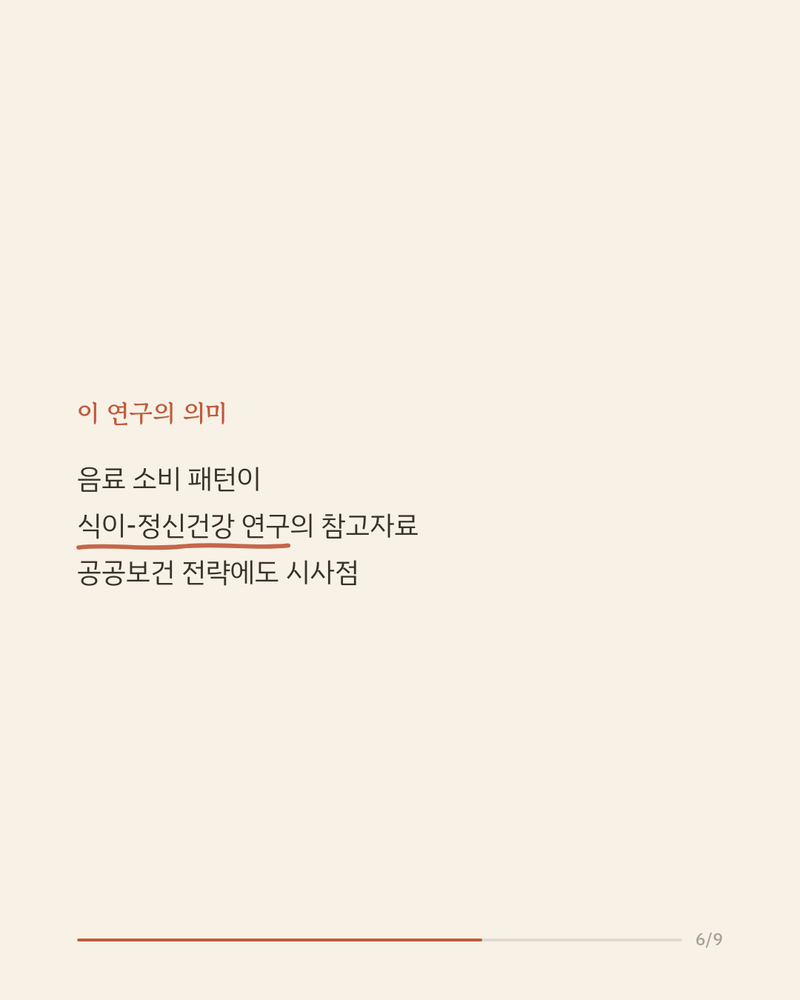
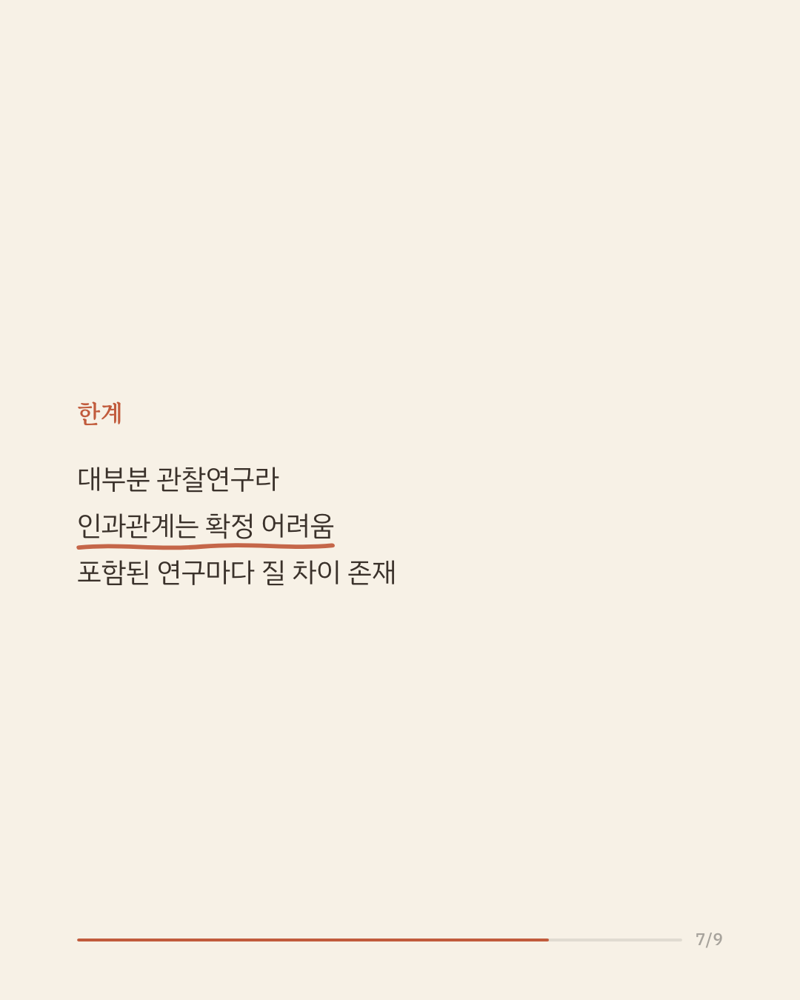
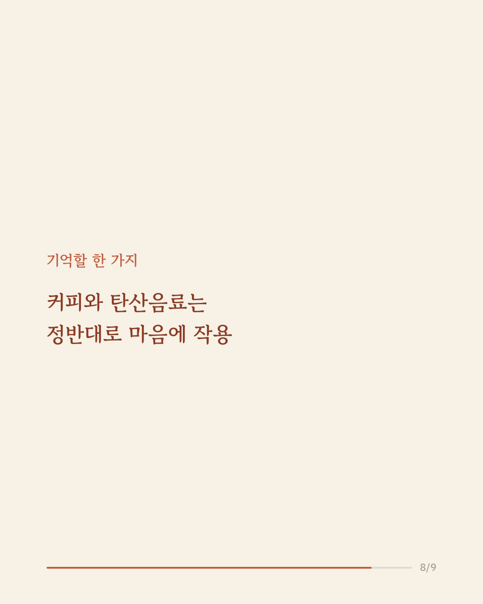
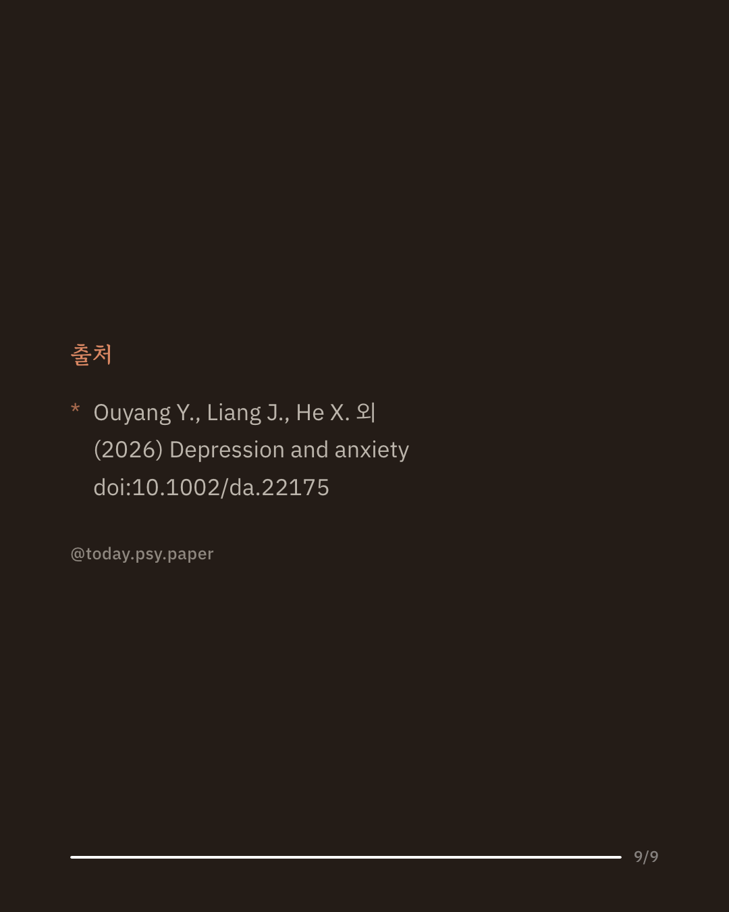

우울증과 불안은 전 세계적으로 흔한 마음의 어려움입니다. 최근에는 커피, 탄산음료, 에너지 드링크 같은 무알코올 음료 섭취 습관과 이런 정신건강 문제 사이의 관련성에 관심이 모이고 있습니다. 이번 연구는 59개 연구, 205만 명이 넘는 참가자 자료를 모아 무알코올 음료 섭취와 우울·불안·스트레스의 관계를 메타분석으로 살펴봤습니다. 분석 결과 음료 섭취가 많을수록 우울증 위험은 약 1.18배, 불안 위험은 약 1.31배 높아지는 것으로 나타났으며, 스트레스와의 관련성은 상대적으로 근거가 불안정했습니다. 흥미롭게도 커피는 우울 위험과 반대 방향(0.87배)의 관련성을 보인 반면, 가당음료·버블티·탄산음료·에너지 드링크는 우울이나 불안 위험과 양의 관련성을 보였습니다. 이 결과는 음료 섭취 습관을 식이-정신건강 연구와 공공보건 전략에 반영할 필요성을 시사합니다. 다만 대부분 관찰연구를 종합한 결과라 인과관계를 단정하기는 어렵고, 포함된 연구마다 질적 차이도 있습니다. 단일 연구이므로 확대 해석은 조심해야 합니다. 출처: Depression and Anxiety, 2026. #정신건강연구 #카페인과우울 #음료와정신건강 #심리학논문리뷰 #식습관건강정보
python3 publish.py 42677042